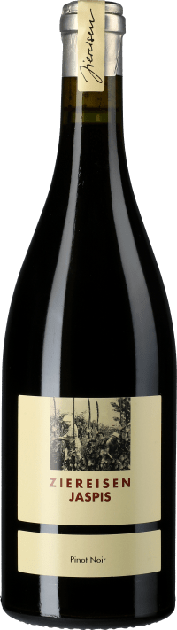
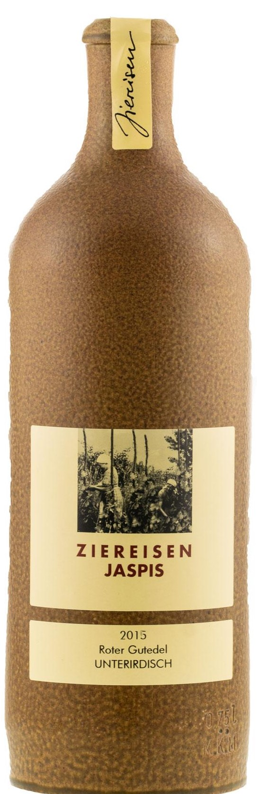

Unsere exquisit Auswahl an Weinen
Unsere Rotweine von Ziereisen:

Name:Jaspis Chardonnay trocken 2017
Preis:69,80€
Alkoholgehalt:13% VOL
Beschreibung: Nach 20 Monaten der Reifung im Barrique trägt der Wein in gelbgrünem Gewand Tiefgang und Elan ins Glas. Sein einladendes und frisches Bukett erinnert an Birnen, Pfirsich und vage an Ananas. Mineralische Salzigkeit,
beeindruckende Kraft und einmalige Eleganz: Der "Jaspis" begeistert den Gaumen vom Antritt bis zum ausgedehnten Abgang. Dank seiner schön eingebundenen mineralischen Säure eignet sich dieser Chardonnay hervorragend als Aperitifwein,
passt aber genauso gut zu weißem Fleisch, Krustentieren und Meeresfrüchten sowie zu Frischkäse.

Name: Jaspis Pinot Noir trocken 2017
Preis:45,00€
Alkoholgehalt:12,5% VOL
Beschreibung:
Kaum ins Glas gekommen, entfaltet er ein sattes Bukett nach reifer Kirsche, unterstrichen von einer rauchigen Note. Am Gaumen hält sich die Frucht zunächst zurück, jedoch zeigt sich dieser fokussierte Spätburgunder mit beachtlichem Trinkfluss. Straff und dicht gleitet er schließlich in einen langen Ausklang.
Kaum ins Glas gekommen, entfaltet er ein sattes Bukett nach reifer Kirsche, unterstrichen von einer rauchigen Note. Am Gaumen hält sich die Frucht zunächst zurück, jedoch zeigt sich dieser fokussierte Spätburgunder mit beachtlichem Trinkfluss. Straff und dicht gleitet er schließlich in einen langen Ausklang.

Name: Jaspis Syrah trocken 2017
Preis:50,00€
Alkoholgehalt:13% VOL
Beschreibung:
In dunklem Kirschrot mit violetten Aufhellungen am Rande präsentiert sich der Ziereisen Jaspis Syrah trocken im Weinglas. Das Bukett eröffnet edle Aromen von dunklen Waldbeeren, Nelken, zerstoßenen Kakaobohnen, getoastetem Eichenholz, rosa Pfeffer und Graphit.
In dunklem Kirschrot mit violetten Aufhellungen am Rande präsentiert sich der Ziereisen Jaspis Syrah trocken im Weinglas. Das Bukett eröffnet edle Aromen von dunklen Waldbeeren, Nelken, zerstoßenen Kakaobohnen, getoastetem Eichenholz, rosa Pfeffer und Graphit.
